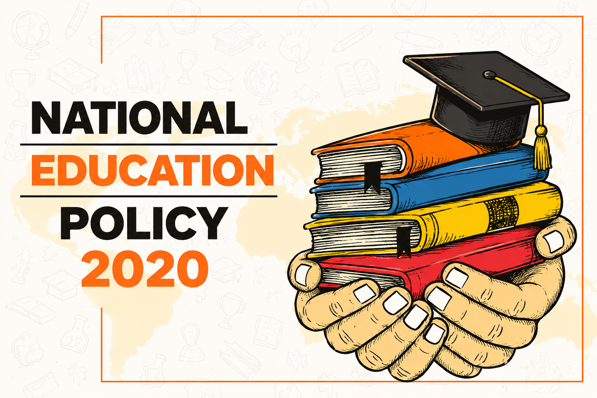

National Education Policy (NEP) 2020 Explained for School Students
The National Education Policy (NEP) 2020
National Education Policy (NEP) 2020 Explained for School Students
Published by: Saraswat Academy

Introduction
The National Education Policy (NEP) 2020 is the latest education policy of India. It was approved on 29 July 2020 with the aim of making education more enjoyable, practical, inclusive and skill-oriented. Instead of encouraging students to memorize facts, the policy focuses on understanding concepts, solving real-life problems, developing creativity and preparing learners for the future.
Why Was a New Education Policy Needed?
- Many students focused mainly on rote learning.
- Subjects were often studied separately with little connection to real life.
- Skill development and vocational education received limited attention.
- Technology and digital learning needed greater integration.
- Children learn in different ways, so education needed to become more flexible.
Main Objectives of NEP 2020
- Provide quality education to every child.
- Ensure foundational literacy and numeracy.
- Develop critical thinking and creativity.
- Promote ethical values and constitutional principles.
- Introduce vocational education and practical skills.
- Increase the use of technology in teaching and learning.
- Make learning enjoyable and less stressful.
The New 5+3+3+4 Structure
| Stage | Age | Classes | Main Focus |
|---|---|---|---|
| Foundational | 3–8 | Pre-school + Classes 1–2 | Play, stories, language, numbers and activities |
| Preparatory | 8–11 | Classes 3–5 | Reading, writing, mathematics, discovery |
| Middle | 11–14 | Classes 6–8 | Science, coding, projects, vocational exposure |
| Secondary | 14–18 | Classes 9–12 | Flexible subject choices, deeper learning, career preparation |
Key Features Explained
1. Foundational Literacy and Numeracy
Reading, writing and basic mathematics are treated as the highest priority because they form the foundation for all future learning.
2. Learning in the Mother Tongue
Where feasible, schools are encouraged to use the child's home language or regional language in the early grades so that concepts become easier to understand.
3. Coding and Digital Skills
Students are introduced to computational thinking and coding in the middle grades to build logical reasoning and problem-solving abilities.
4. Vocational Education
Students receive exposure to practical skills such as gardening, carpentry, electronics, crafts or entrepreneurship depending on local opportunities.
5. Flexible Subject Choices
Students are encouraged to combine subjects according to their interests instead of being restricted by traditional stream boundaries.
6. Competency-Based Assessment
Assessments increasingly focus on understanding, application and reasoning rather than memorization.
How Does NEP Benefit Students?
| Area | Benefit |
|---|---|
| Learning | Better conceptual understanding |
| Skills | Critical thinking, creativity and communication |
| Technology | Digital literacy and responsible technology use |
| Career | Early exposure to practical and vocational skills |
| Confidence | Reduced fear of examinations through holistic assessment |
Benefits for Teachers
- More freedom to use creative teaching methods.
- Continuous professional development.
- Greater focus on student participation.
Benefits for Parents
- Children develop academically as well as socially and emotionally.
- Progress reports include more than examination marks.
Old System vs NEP 2020
| Earlier Approach | NEP 2020 |
|---|---|
| 10+2 structure | 5+3+3+4 developmental structure |
| Rote learning | Conceptual understanding |
| Limited flexibility | Flexible learning pathways |
| Exam-centred | Competency-centred assessment |
Real-Life Example
Instead of only memorizing the formula for the area of a rectangle, students may measure the floor of a classroom, calculate the area and discuss where such calculations are used in daily life.
Frequently Asked Questions
Will board examinations disappear?
No. The policy aims to make assessments more competency-based and less dependent on rote memorization.
Does NEP make every school identical?
No. Implementation depends on educational boards and state governments, but the overall vision remains the same.
Why is NEP important?
It prepares students with knowledge, skills, values and adaptability for higher education, employment and lifelong learning.
Conclusion
NEP 2020 is designed to transform school education by balancing academic excellence with practical skills, creativity, technology and values. Its central message is simple: education should help every child understand, think independently, solve problems and become a responsible citizen.